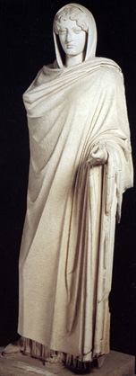

главная  персоналии
персоналии  Аспазия
Аспазия
главная |

Личность в историикраткая энциклопедияПроект «Личность в истории» посвящен людям — современникам грандиозных исторических событий, носителям редких качеств или людям, взгляды которых опередили их время. |
|||||||||||||||||||||||
Коротко |
Статьи |
Персоналии |
Литература |
||||||||||||||||||||
Аспазия |
|||||||||||||||||||||||
|
Сводят с ума меня губы, речистые, алые губы; Диоскорид, «Возлюбленной» |
 Аспазия. |
||||||||||||||||||||||
Биографическая справкаАспазия из Милета (ок. 470 г. до н. э. — после 427 г. до н. э.), одна из выдающихся женщин Древней Греции. Вторая жена Перикла. Была чрезвычайно красива и образована. Участвовала в обсуждении философских вопросов, наравне со своим мужем. Не желая следовать строгим правилам, установленным в Афинах для женщин, навлекла себя неудовольствие местных блюстителей приличий. Поскольку Аспазия не имела Афинского гражданства, то ее брак с Периклом не был полностью законным. В 432 г. до н. э. Противниками Перикла привлечена к судебной ответственности по обвинению в безнравственности и непочитании богов. Оправдана благодаря защите Перикла. После смерти Перикла вторично вышла замуж. После смерти второго мужа навсегда покинула Афины. Год смерти неизвестен.
Цитаты«Каким великим искусством или силой она обладала, если подчинила себе занимавших первое место государственных деятелей и даже философы много говорили о ней как о женщине незаурядной». (Плутарх. Перикл. XXIV.) «Что касается Аспасии, то, по некоторым известиям, Перикл пленился ею как умной женщиной, понимавшей толк в государственных делах. Да и Сократ иногда ходил к ней со своими знакомыми, и ученики его приводили к ней своих жен, чтобы послушать ее рассуждения…» (Плутарх. Перикл. XXIV.) «Говорят, Аспасия достигла такой известности и славы, что даже Кир — тот, который вел войну с персидским царем из-за престола, — назвал самую любимую свою наложницу, которая носила прежде имя «Мильто», Аспасией». (Плутарх. Перикл. XXIV.) «Против Аспасии был возбужден судебный процесс по обвинению в нечестии. Обвинителем ее выступил комический поэт Гермипп, который обвинял ее еще и в том, что к ней ходят свободные женщины, которых она принимает для Перикла». (Плутарх. Перикл. XXXII.) «…очевидно, что привязанность Перикла к Аспасии была основана скорее на страстной любви». (Плутарх. Перикл. XXIV.) Статьи
Список литературы
|
|||||||||||||||||||||||
|